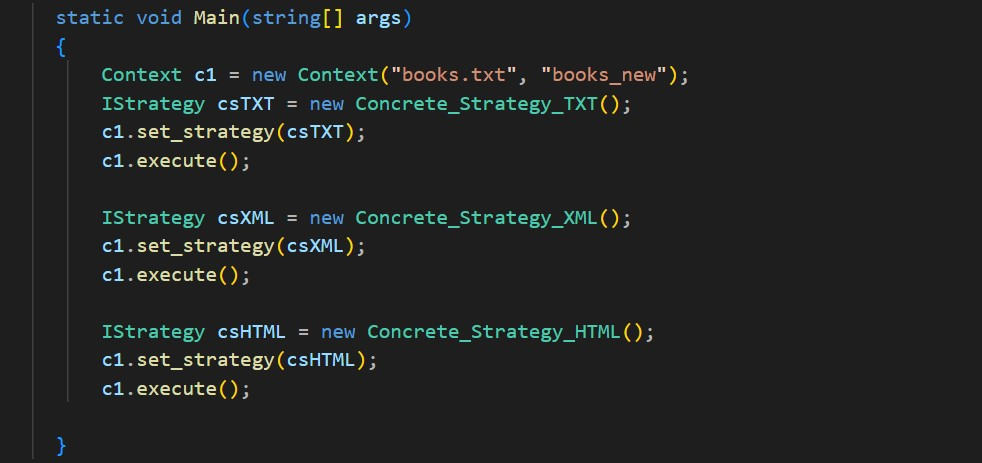

12 Design patterns
implemented in c#
There are 10 small console projects with implementation of 12 design patterns:
- Strategy
- Composite
- Builder + Decorator (My favorite one) + Prototype
- Command
- Memento
- Observer (implemented in c++)
- State
- Bridge
- Mediator
- Iterator
Example of the Strategy Main() method:

I didn't follow any tutorial to write these programs.
I used the knowledge I gained during my studies. You can download and see the code.